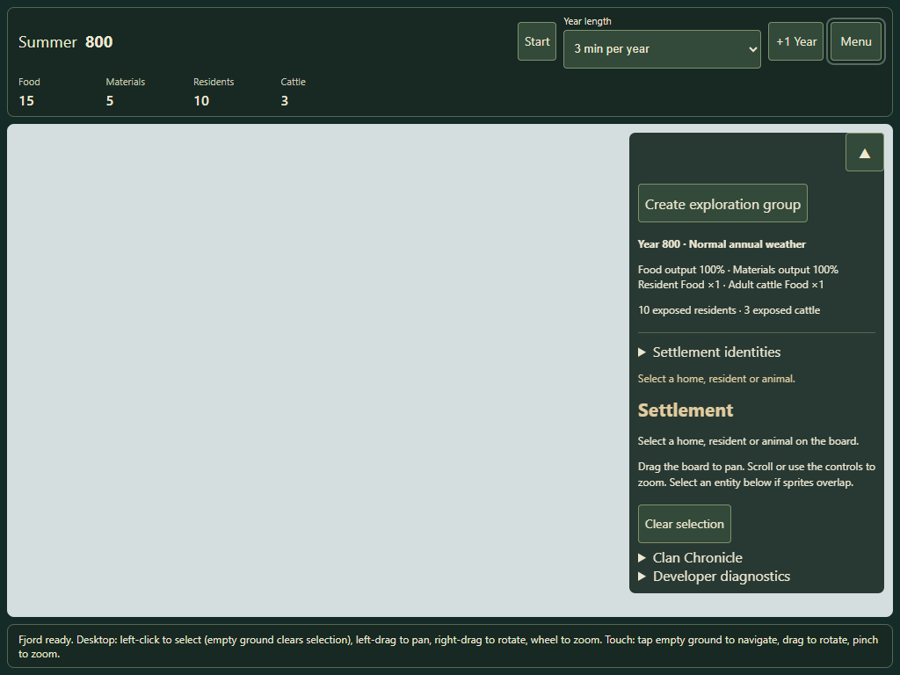
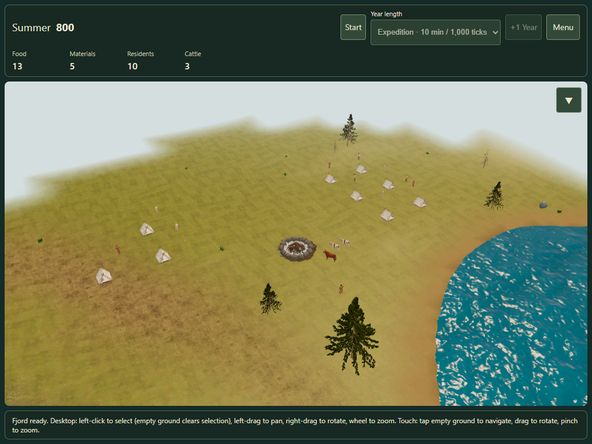
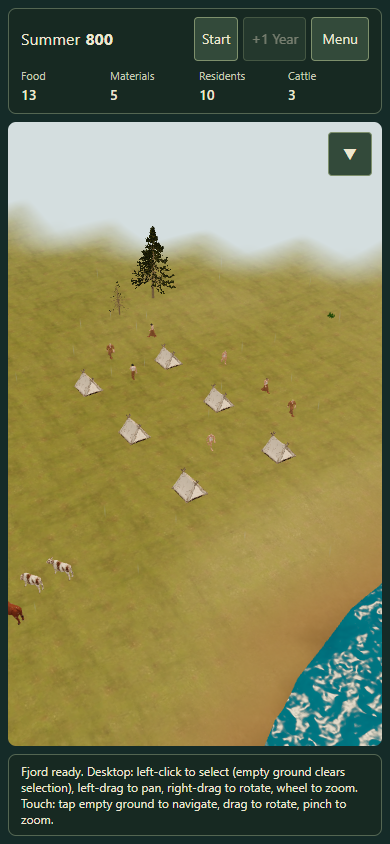
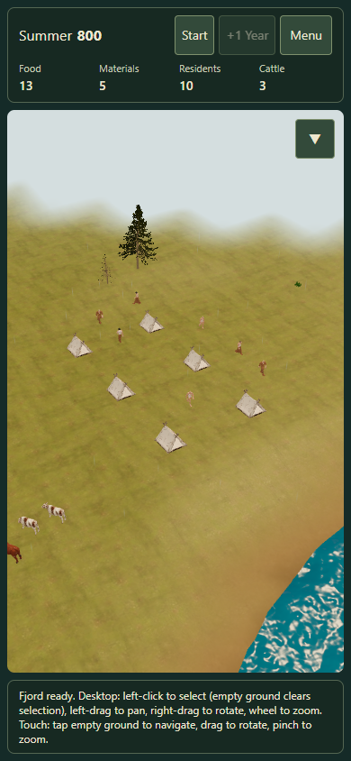

The rival exists from the summer landing and advances with the campaign clock, even while unseen. Its residents, tents, cattle and campfire come from its saved simulation.
Review prototype · draft PR #185 · #149. Existing campaigns retain their own world. These scenarios use genuine scout travel, without injected discovery or extra supplies.
Each button opens a paused test campaign in a new tab, with the camera facing the rival reserve. Your current tab keeps its session. The review tab can update the automatic resume checkpoint; export a valued campaign before testing. Close the founding Clan Book if it opens.



All ten founding populations fit across the two curated island geometries. The existing 500-tick expedition pack reaches observations on island 7; tested trips on island 18 return before seeing the rival. Food, endurance and route-search budgets are unchanged.
The 100-Winter replay matches an independent CPU run, including save/load halfway through. Seed 32 eventually loses all residents under existing rules; there is no hidden respawn, subsidy or new CPU management policy.
Physical iPhone/iPad performance and owner acceptance remain open. Desktop emulation is reported separately.
Report · Ten seeds and replay · Raw browser measurements · Model and culling evidence · Draft PR #185